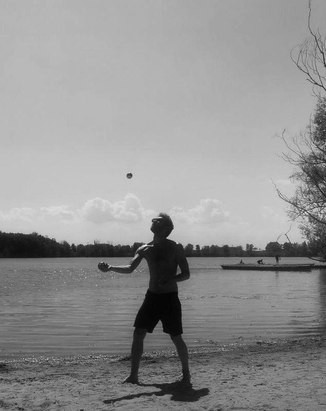

I am a social scientist specializing in the intersection of political sociology, sociology of education, social stratification and peace and conflict research.
My research focuses on inequality, belonging, attitudes, social conflict and cohesion. I am currently based at the Faculty of Social Sciences at Goethe University Frankfurt (Germany), where I am part of the Research Group Reconfiguration and Internalization of Social Structure (RISS).
Besides my own research, I am also involved in promoting scientific research as a board member of the GRADE Center Social Sciences and the Forum for Critical Science (FkW). I also take part in evaluating international study programs as a member of the (AQAS) expert panel.
I am affiliated with the Institute for Social Research (IfS) , where I am part of the graduate program Dialectics of Participation, and the Leibniz Institute for Research and Information in Education (DIPF), where I participate in the program PPeers4Practic - A Tandem approach for Early Career Teachers and Researchers.
A Short Personal Note
Outside of my academic work, I enjoy spending time outdoors. Cycling, swimming, hiking, and camping are all regular activities for me, as I love physical activity and being in nature. This helps me to reflect and recharge. In general, I am passionate about connecting science with the political and societal realities it seeks to describe. It's a question I keep returning to, both in my work and free time.
I live in Frankfurt am Main, where I share a flat with a wonderful flatmate and enjoy being part of a supportive neighborhood. Prior to this, I lived in Cologne for many years, and I have also spent extended periods in Berlin, Beirut, Be'er Sheva, and Budapest.
I am active in various sports clubs, supporting them by taking care of administrative duties and acting as an active coach. After many years of balancing academic and humanitarian work alongside numerous tasks and deadlines, I recently took up juggling. It feels like a fitting way to transfer my organisational and theoretical skills into a physical realm.
